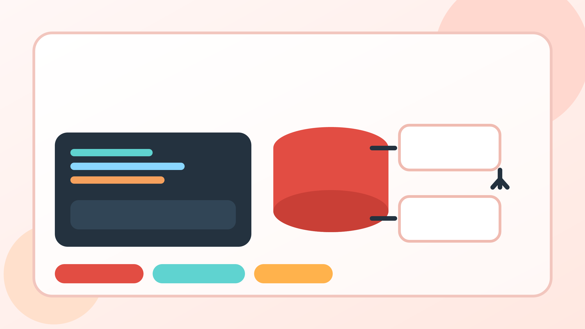

Generate linked business data in safe test databases and simulate realistic sales-to-delivery workflows without manual imports.

Create customers, products, sale orders, invoices, payments, deliveries, stock moves, and move lines in one controlled run.
Configure how many orders are confirmed, invoiced, paid, and delivered to produce realistic test scenarios for demos, QA, and reporting.
Built-in database-name checks and generation limits help keep the module restricted to sandbox, demo, stage, and development environments.
This module is designed for safe non-production data generation. It is not intended to bypass Odoo licensing, hide functionality, or run destructive actions in production databases.